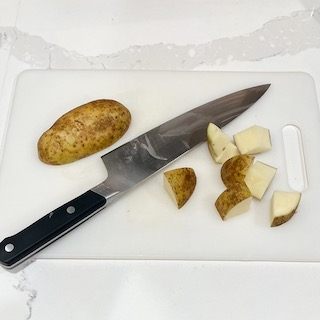
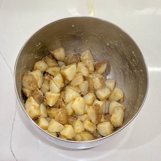
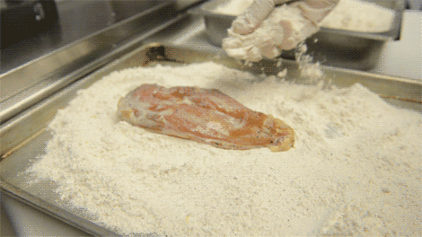
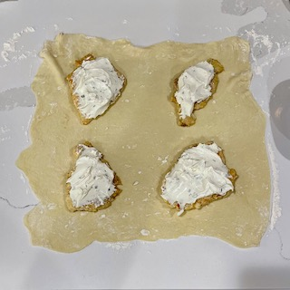
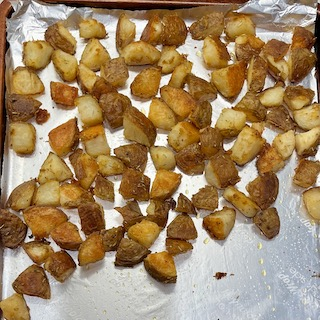

- boneless, skinless chicken breast, medium - Qty: 4
- frozen puff pastry box (2 sheets per box) - Qty: 1
- whipped cream cheese w/ chive, 8oz - Qty: 8 ounces
- Russet potatoes - Qty: 2-2.5 pounds
- duck fat - 3-4 tablespoons
- olive oil - 2 tablespoons
- egg - Qty: 2 whole
- flour - Qty: 1 cup
- salt, pepper, and paprika to taste
- fresh rosemary & parsley (optional)
Some notes:
- This dish is awesome with hollandaise sauce. I typically buy a pre-made sauce mix and the necessary ingredients since it's much easier and tastes great. If you're feeling adventurous, try this from-scratch recipe from Downshiftology.
- I typically make simple sautéed green beans with this meal, but most green veggies will go well with this dish. Broccolini is another great choice!
Directions:
Prepare potatoes: Clean thoroughly, and peel if desired. dice into 1-1.5 inch cubes and place into a large pot filled with heavily salted cool water. Over medium-high heat, bring potatoes to a boil. Once boiled, lower the heat to a gentle boil and cook for 10 minutes, or until a fork easily pierces the potatoes.
Season and bake potatoes: Preheat oven to 450 degrees. Strain boiled potatoes when finished, and place them in a large mixing bowl. Add duck fat, and season to your liking with salt, pepper, and paprika. Shake bowl roughly until potatoes are covered in duck fat and seasoning and develop a starchy coating. transfer to a nonstick baking sheet or on nonstick foil and place in the oven for 15 minutes at 450 degrees. (optional: add rosemary here if you’d like)
Brown chicken: Preheat a skillet on medium heat. On a large cutting board, lay out chicken breast and season with salt and pepper. Place a sheet of plastic wrap (ex; Saran, Cling wrap) over the chicken breast, and tenderize until each breast is no more than a half-inch thick. If chicken breasts are very large, it may be necessary to fillet them so they’re equal in thickness. Add roughly two tablespoons of olive oil to the skillet and bring to cooking temperature, roughly 320-330 degrees. Coat each breast in egg, then flour, then brown on each side for no more than two minutes. set aside for the next step.
Prepare chicken: On a large, clean surface, sprinkle flour, and roll out thawed dough to a slightly larger square, somewhere between 16 and 18 inches wide and tall. Place the browned chicken breasts at each corner of the dough and cover each with a fourth of the whipped cream cheese. Cut a cross pattern into the dough, creating 4 individual smaller sheets to wrap each chicken breast. Fold each corner of the dough up and apply egg wash. once completely folded, apply egg wash to the top and sprinkle with salt and pepper. place each wrapped chicken breast on a non-stick baking skeet, or cover with nonstick foil.
Shake potatoes & start chicken: Once potatoes have cooked for 15 minutes, remove from oven and lower the temperature to 400 degrees. shake potatoes up and turn for even cooking. return potatoes to the top rack of the oven and place chicken on the middle rack and cook for 20-25 minutes, or until the pastry has puffed and is golden brown and the chicken reaches an internal temperature of 165 degrees.
Enjoy: Once chicken puff pastry is cooked, remove from oven with potatoes. let sit for a few minutes to cool. Serve with sautéed greens and hollandaise sauce. (optional: garnish with fresh parsley)